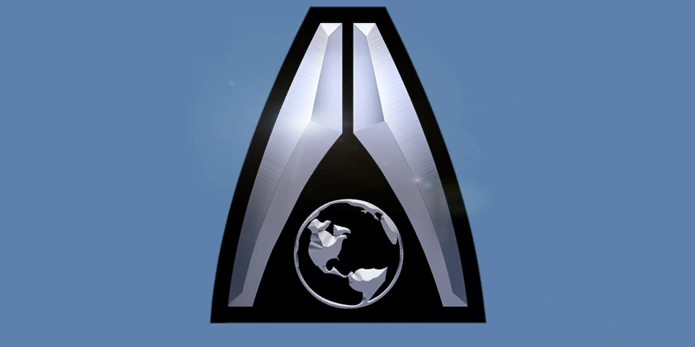
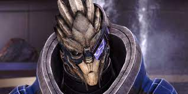

Humanity
Earth

The homeworld and capital of humanity is entering a new golden age. The resource wealth of a dozen settled colonies and a hundred industrial outposts flows back to Earth, fueling great works of industry, commerce, and art. The great cities are greening as arcology skyscrapers and telecommuting allow more efficient use of land. Earth is still divided among nation-states, though all are affiliated beneath the overarching banner of the Systems Alliance. While every human enjoys longer and better life than ever, the gap between rich and poor widens daily. Advanced nations have eliminated most genetic disease and pollution. Less fortunate regions have not progressed beyond 20th century technology, and are often smog-choked, overpopulated slums. Sea levels have risen two meters in the last 200 years, and violent weather is common due to environmental damage inflicted during the late 21st century. The past few decades, however, have seen significant improvement due to recent technological advances.
Listen to the lore!
The Alliance
The Systems Alliance is an independent supranational government representing the interests of humanity as a whole. The Alliance is responsible for the governance and defense of all extra-solar colonies and stations. The Alliance grew out of the various nation space programs as a matter of practicality. Sol's planets had been explored and exploited through piecemeal nation efforts. The expense of colonizing entire new solar systems could not be met by any one country. With humans knowing that alien contact was inevitable, there was enough political will to jointly fund an international effort. Still, the Alliance was often disregarded by those on Earth until the First Contact War. While the national governments dithered and bickered over who should lead the effort to liberate Shanxi, the Alliance fleet struck decisively. Post-War public approval gave the Alliance the credibility to establish its own Parliament and become the galactic face of humanity.
Listen to the lore!
First Contact War

Humanity's first contact with an alien race occurred in 2157. At that time, the Alliance allowed survey fleets to activate any dormant mass relays discovered, a practice considered dangerous and irresponsible by Council-aligned races. When a turian patrol discovered a human fleet attempting to activate a relay, they attacked. One human vessel survived, retreating to the colony of Shanxi. The turians followed, quickly defeating the local forces. Shanxi was occupied, the first - and, to date, only - human world to be conquered by an alien species. The turians believed the handful of ships they defeated represented the bulk of human defenses. So they were unprepared when the Second Fleet under Admiral Kastanie Drescher launched a strong counteroffensive, evicting them from Shanxi. The turians mobilized for full-scale war, drawing the attention of the rest of the galaxy. The Council quickly intervened, forcing a truce. Fortunately for humanity, the First Contact War was ended with a diplomatic solution.
Listen to the lore!
Council Races
Asari
The asari were the first species to discover the Citadel. When the salarians arrived, it was the asari who proposed the establishment of the Citadel Council to maintain peace throughout the galaxy. Since then, the asari have served as the mediators and centrists of the Council. An all-female race, the asari reproduce through a form of parthenogenesis. Each asari can attune her nervous system to that of another individual of any gender, and of any species, to reproduce. This capability has led to unseemly and inaccurate rumors about asari promiscuity. Asari can live for over 1000 years, passing through three stages of life. In the Maiden stage, they wander restlessly, seeking new knowledge and experience. When the Matron stage begins, they 'meld' with interesting partners to produce their offspring. This ends when they reach the Matriarch stage, where they assume the roles of leaders and councilors.
Listen to the lore!
Salarian
The second species to join the Citadel, the salarians are warm-blooded amphibians with a hyperactive metabolism. Salarians think fast, talk fast, and move fast. To salarians, other species seem sluggish and dull-witted. Unfortunately, their metabolic speed leaves them with a relatively short lifespan; salarians over the age of 40 are a rarity. The salarians were responsible for advancing the development of the primitive krogan species to use as soldiers during the Rachni Wars. They were also behind the creation of the genophage bioweapon the turians used to quell the Krogan Rebellions several centuries later. Salarians are known for their observational capability and non-linear thinking. This manifests as an aptitude for research and espionage. They are constantly experimenting and inventing, and it is generally accepted that they always know more than they're letting on.
Listen to the lore!
Turian
Roughly 1200 years ago, the turians were invited to join the Citadel Council to fulfill the role of galactic peacekeepers. The turians have the largest fleet in Citadel space, and they make up the single largest portion of the Council's military forces. As their territory and influence has spread, the turians have come to rely on the salarians for military intelligence and the asari for diplomacy. Despite a somewhat colonial attitude towards the rest of the galaxy, the ruling Hierarchy understands they would lose more than they would gain if the other two races were ever removed. Turians come from an autocratic society that values discipline and possesses a strong sense of personal and collective honor. There is lingering animosity between turians and humans over the First Contact War of 2157, which is known as the 'Relay 314 Incident' to the turians. Officially, however, the two species are allies and they enjoy civil, if cool, diplomatic relations.
Listen to the lore!
Technology
Element Zero

When subjected to an electrical current, the rare material dubbed element zero, or "eezo", emits a dark energy field that raises or lowers the mass of all objects within it. This "mass effect" is used in countless ways, from generating artificial gravity to manufacturing high-strength construction materials. It is most prominently used to enable faster-than-light space travel. Eezo is generated when solid matter, such as a planet, is affected by the energy of a star going supernova. The material is common in the asteroid debris that orbit neutron stars and pulsars. These are dangerous places to mine, requiring extensive use of robotics, telepresence, and shielding to survive the incredible radiation from the dead star. Only a few major corporations can afford the set-up costs required to work these primary sources. Humanity discovered refined element zero at the Prothean research station on Mars, allowing them to create mass effect fields and develop FTL travel.
Listen to the lore!
Mass Effect Fields

Element zero can increase or decrease the mass of a volume of space-time when subjected to an electrical current. With a positive current, mass is increased. With a negative current, mass is decreased. The stronger the current, the greater the magnitude of the dark energy mass effect. In space, low-mass fields allow FTL travel and inexpensive surface-to-orbit transit. High-mass fields create artificial gravity and push space debris away from vessels. In manufacturing low-mass fields permit the creation of evenly-blended alloys, while high mass compaction creates dense, sturdy construction materials. The military makes extensive use of mobility enhancing technologies, with mass effect utilizing fighting vehicles standard front-line issue in most military forces. Mass effect fields are also essential in the creation of kinetic barriers or shields to protect against enemy fire.
Listen to the lore!
Mass Relays

Mass relays are feats of Prothean engineering advanced far beyond the technology of any living species. They are enormous structures scattered throughout the stars, and can create corridors of virtually mass-free space allowing instantaneous transit between locations separated by years or even centuries of travel using conventional FTL drives. Primary mass relays can propel ships thousands of light years, often from one spiral arm of the galaxy to another. However, they have fixed one-to-one connections: a primary relay connects to one other primary relay, and nowhere else. Secondary relays can only propel ships a few hundred light years, however they are omnidirectional: a secondary relay can send a ship to any other relay within its limited range. There are many dormant primary relays whose corresponding twins have not yet been located. These are left inactive until their partner is charted, as established civilizations are unwilling to blindly open a passage that might connect them to a hostile species.
Listen to the lore!